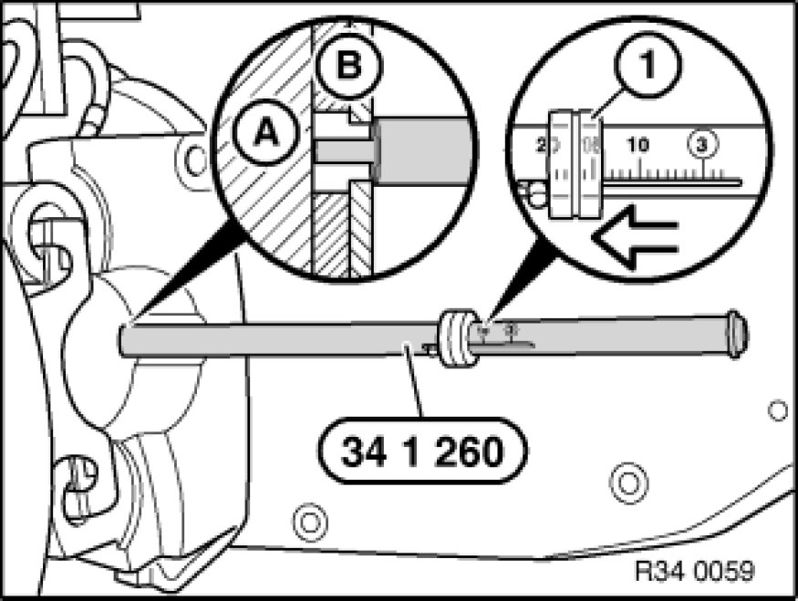

Brake Pad: Testing and Inspection
34 00 010 - Checking thickness of brake pad

Special tools required:
- 34 1 260 34 1 260 Brake Lining Measuring Gauge

Note:
The thickness of the outer brake pads can be determined without removing the wheels.
If necessary, move car until opening for brake pad wear indicator (brake pad) can be seen through rim styling.

Insert special tool 34 1 260 34 1 260 Brake Lining Measuring Gauge through rim into opening for brake pad wear indicator.
Press special tool onto brake pad. Slide ring (1) in direction of arrow up to stop and read off measured value.
Note:
(A) Brake disk
(B) Brake pad with backplate
Safe limit for lining wear, front brake [1][2]34 11 Front Brake.
Safe limit for lining wear, rear brake [1][2]34 21 Rear Brake.